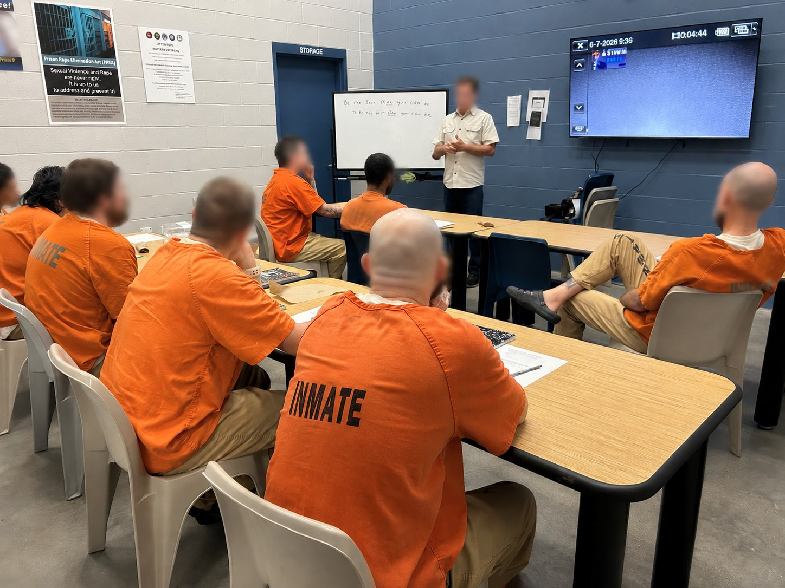
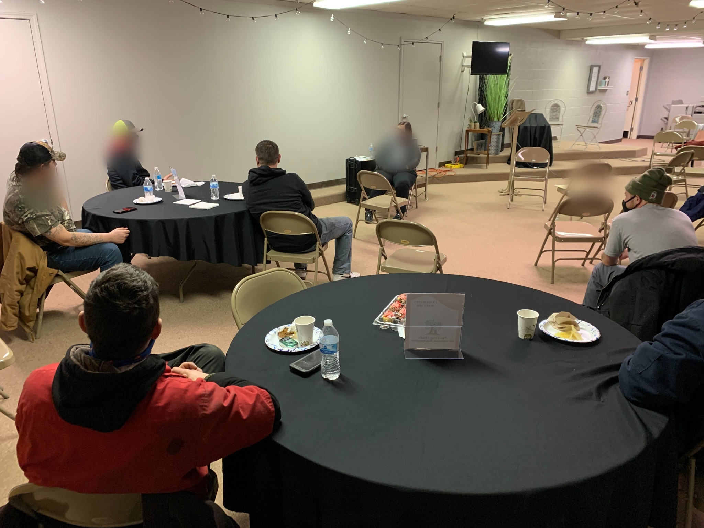

Dedicated Dads provides fatherhood awareness and training through the Madison County Problem Solving Court, the Madison County Correctional Complex, and the TOWER Program at the Hamilton County Jail.
Our two fundamentals of fatherhood:
- Be the best man you can be to be the best dad you can be
- Be present
The class series challenges dads to identify the man and father they want to become and the steps needed to reach those goals. Training covers the Five P’s of fatherhood, child development, co-parenting, family conflict, social services, and career planning.

